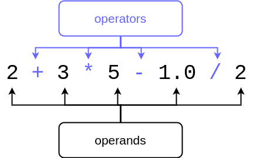

Operacions Aritmètiques
Objectius d'aprenentatge
- Seràs capaç d'utilitzar variables en diferents operacions aritmètiques.
- Sabràs com tractar els nombres quan venen de l'entrada de dades de l'usuari.
- Sabràs com convertir valors entre els tipus de dades fonamentals (
int,float,str).
Operacions aritmètiques
En les seccions anteriors has vist exemples amb aritmètica bàsica. A continuació es mostra una taula amb els operadors aritmètics més comuns en Python, amb exemples:
| Operador | Propòsit | Exemple | Resultat |
|---|---|---|---|
| + | Suma | 2 + 4 |
6 |
| - | Resta | 10 - 2.5 |
7.5 |
| * | Multiplicació | -2 * 123 |
-246 |
| / | Divisió (resultat float) |
9 / 2 |
4.5 |
| // | Divisió entera | 9 // 2 |
4 |
| % | Resta de la divisió (mòdul) | 9 % 2 |
1 |
| ** | Exponenciació | 2 ** 3 |
8 |
La prioritat d'operacions és la mateixa que en matemàtiques: primer els exponents, després multiplicacions i divisions, i finalment sumes i restes. La prioritat es pot canviar amb parèntesis.
Per exemple aquest codi:
print(2 + 3 * 3)
print((2 + 3) * 3)imprimeix:
11 15
Operands, operadors i tipus de dades

Un càlcul normalment està format per operands i operadors. El tipus de dada d'un operand normalment determina el tipus de dada del resultat: si dos enters s'afegeixen, el resultat serà un enter. Si una cadena de text es resta d'una altra (no aplicable directament) o si es realitzen operacions amb nombres de punt flotant, el resultat serà un float. De fet, si qualsevol un dels operands d'una expressió és un
float, el resultat serà un float, independentment dels altres operands.
La divisió / és una excepció a aquesta regla: el seu resultat sempre és de tipus float, encara que els operands siguin enters. Per exemple 1 / 5 dona 0.2.
Exemple: càlcul de l'IMC
Exemple d'un programa que calcula l'índex de massa corporal (IMC)
altura = 172.5
pes = 68.55
# l'IMC es calcula dividint la massa pel quadrat de l'altura
# l'altura s'ha de convertir a metres en la fórmula
imc = pes / (altura / 100) ** 2
print(f"L'IMC és {imc}")Aquest programa imprimeix:
L'IMC és 23.037177063642087
Fixeu-vos que Python també té l'operador de divisió entera //. Si els operands són enters, el resultat serà un enter, arrodonit cap avall.
x = 3
y = 2
print(f"/ operator {x/y}")
print(f"// operator {x//y}")/ operator 1.5 // operator 1
Nombres com a entrada de l'usuari
Ja hem utilitzat la funció input() per llegir cadenes de text de l'usuari. La mateixa funció es pot utilitzar per llegir nombres, però la cadena retornada per input() s'ha de convertir al tipus numèric corresponent dins del codi del programa. Per convertir una cadena a un enter s'utilitza la funció int().
A continuació un exemple que demana l'any de naixement i el converteix a enter per poder calcular l'edat:
entrada_any = input("En quin any vas néixer? ")
any = int(entrada_any)
print(f"La teva edat a final de l'any 2021: {2021 - any}")En quin any vas néixer? 1995 La teva edat a final de l'any 2021: 26
Normalment no cal crear dues variables separades. Es pot llegir i convertir en una sola línia:
any = int(input("En quin any vas néixer? "))
print(f"La teva edat a final de l'any 2021: {2021 - any}")De la mateixa manera, una cadena es pot convertir a float amb la funció float(). Aquest programa demana l'altura i el pes i calcula l'IMC:
altura = float(input("Quina és la teva altura (en cm)? "))
pes = float(input("Quin és el teu pes (en kg)? "))
altura = altura / 100
imc = pes / altura ** 2
print(f"L'IMC és {imc}")Quina és la teva altura (en cm)? 163 Quin és el teu pes (en kg)? 74.45 L'IMC és 28.02137829801649
Exercici 1: Per cinc
Escriu un programa que demani a l'usuari un nombre. El programa ha d'imprimir el nombre multiplicat per cinc.
Introdueix un nombre: 3 3 multiplicat per 5 és 15
Exercici 2: Nom i edat
Escriu un programa que demani el nom de l'usuari i l'any de naixement. Després imprimeix un missatge amb el nom i l'edat que tindrà a finals de l'any 2026.
Com et dius? Oriol Pons En quin any vas néixer? 1990 Hola Oriol Pons, tindràs 36 anys a final de l'any 2026
Utilització de variables
Vegem un programa que calcula la suma de tres nombres donats per l'usuari
numero1 = int(input("Primer nombre: "))
numero2 = int(input("Segon nombre: "))
numero3 = int(input("Tercer nombre: "))
suma = numero1 + numero2 + numero3
print(f"La suma dels nombres: {suma}")Primer nombre: 5 Segon nombre: 21 Tercer nombre: 7 La suma dels nombres: 33
El programa anterior fa servir quatre variables, però en aquest cas en n'hi haurien prou dues. Podem reutilitzar una variable per llegir diversos valors si no cal conservar-los:
suma = 0
numero = int(input("Primer nombre: "))
suma = suma + numero
numero = int(input("Segon nombre: "))
suma = suma + numero
numero = int(input("Tercer nombre: "))
suma = suma + numero
print(f"La suma dels nombres: {suma}")La instrucció suma = suma + numero pot abreujar-se amb l'operador compost suma += numero:
suma = 0
suma += int(input("Primer nombre: "))
suma += int(input("Segon nombre: "))
suma += int(input("Tercer nombre: "))
print(f"La suma dels nombres: {suma}")Si necessites recordar cada valor introduït, no és possible reutilitzar la mateixa variable. Per exemple:
numero1 = int(input("Primer nombre: "))
numero2 = int(input("Segon nombre: "))
print(f"{numero1} + {numero2} = {numero1+numero2}")Primer nombre: 2 Segon nombre: 3 2 + 3 = 5
Reutilitzar una variable té sentit només quan necessitem emmagatzemar temporalment valors d'un tipus o propòsit semblant, com en la suma acumulada.
No és recomanable usar la mateixa variable per a conceptes diferents (per exemple, primer per al nom i després per l'edat). Millor utilitzar noms descriptius:
nom = input("Com et dius? ")
print("Hola " + nom + "!")
edat = int(input("Quants anys tens? "))
# el programa continua...Exercici 3: Segons en un dia
Escriu un programa que demani a l'usuari un nombre de dies. El programa ha d'imprimir el nombre de segons que hi ha en la quantitat de dies donada.
Quants dies? 1 Segons en aquesta quantitat de dies: 86400
Quants dies? 7 Segons en aquesta quantitat de dies: 604800
Exercici 4: Corregir el codi — Producte
Aquest programa demana a l'usuari tres nombres i ha d'imprimir el producte (els nombres multiplicats entre si). Hi ha, però, alguna cosa malament amb el programa: no funciona bé. Corregiu el codi. Mostrem el codi erroni:
# Corregiu el codi
numero = int(input("Introdueix el primer nombre: "))
numero = int(input("Introdueix el segon nombre: "))
numero = int(input("Introdueix el tercer nombre: "))
producte = numero * numero * numero
print("El producte és", producte)Introdueix el primer nombre: 2 Introdueix el segon nombre: 3 Introdueix el tercer nombre: 5 El producte és 30
Exercici 5: Suma i producte
Escriu un programa que demani a l'usuari dos nombres. El programa ha d'imprimir la suma i el producte d'aquests dos nombres.
Nombre 1: 3 Nombre 2: 7 La suma dels nombres: 10 El producte dels nombres: 21
Exercici 6: Suma i mitjana
Escriu un programa que demani a l'usuari quatre nombres. El programa ha d'imprimir la suma i la mitjana dels nombres.
Nombre 1: 2 Nombre 2: 1 Nombre 3: 6 Nombre 4: 7 La suma dels nombres és 16 i la mitjana és 4.0
Exercici 7: Despesa en alimentació
Escriu un programa que estimi la despesa típica d'alimentació d'un usuari. El programa demana quantes vegades a la setmana dinen a la cantina. Després pregunta el preu d'un dinar tipus i quant diners es gasten en queviures la setmana.
Amb aquesta informació calcula la despesa setmanal i diària.
Quantes vegades a la setmana menges a la cantina? 4 El preu d'un dinar típic? 2.5 Quant diners gastes en queviures la setmana? 28.5 Despesa alimentària mitjana: Diària: 5.5 euros Setmanal: 38.5 euros
Exercici 8: Estudiants en grups
Escriu un programa que demani el nombre d'estudiants d'un curs i la mida desitjada dels grups. El programa ha d'imprimir el nombre de grups formats amb els estudiants del curs. Si la divisió no és exacta, algun grup pot tenir menys membres.
És acceptable resoldre aquest exercici utilitzant la divisió entera // o amb una construcció condicional si prefereixes.
Quants estudiants hi ha al curs? 8 Mida desitjada del grup? 4 Nombre de grups formats: 2
Quants estudiants hi ha al curs? 11 Mida desitjada del grup? 3 Nombre de grups formats: 4
Conceptes clau
- Operador: símbol que indica una operació (p. ex. +, -, *, /, //, %, **).
- Operand: valor o variable sobre la qual actua l'operador.
- Conversió: transformar una dada d'un tipus a un altre mitjançant
int()ofloat(). - Divisió entera: operador
//que retorna la part entera de la divisió (arrodonit avall). - Mòdul: operador
%que retorna la resta d'una divisió.